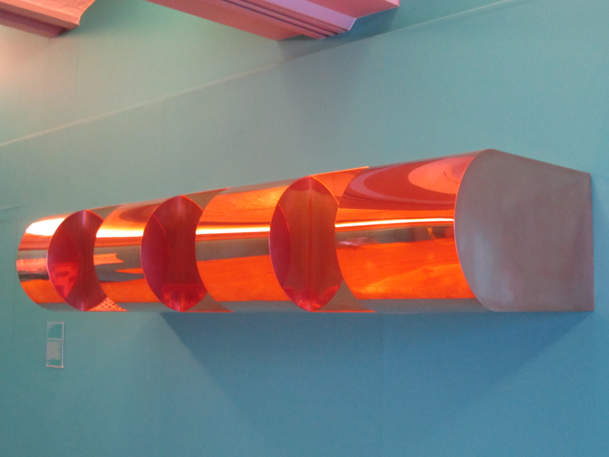
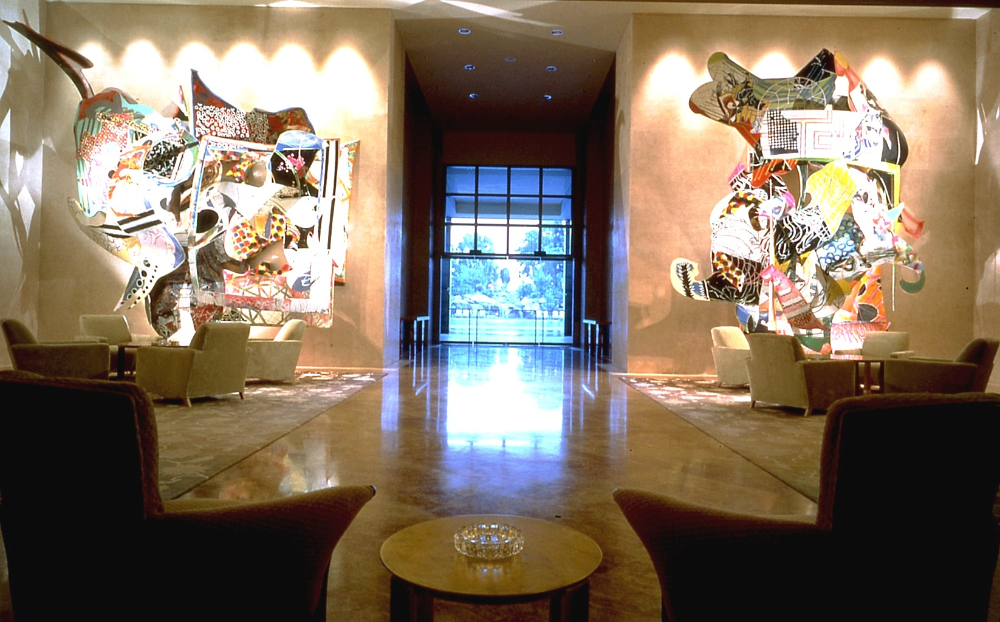
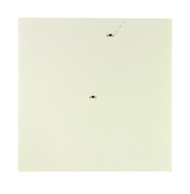

Meesterwerk: Untitled (Stack)
Donald Judd, 1967

📚 TIJDSGEEST CONTEXT (1960-1975)
🌍 POLITIEK PERSPECTIEF - UITGEBREID
De Politieke Tijdsgeest van de Jaren 1960-1970
Minimalisme ontstond in een periode van intense sociale en politieke veranderingen. De jaren 1960 werden gekenmerkt door de Vietnamoorlog (1955-1975), de Civil Rights Movement in de Verenigde Staten, en de voortdurende spanningen van de Koude Oorlog. Terwijl de Abstract Expressionisten van de jaren 1940-1950 vaak werden gezien als dragers van een politieke boodschap - namelijk de vrijheid van het individu als contrast met het Sovjet-communisme - weigerden de Minimalisten elk politiek of emotioneel narratief in hun werk.
Anti-Expressionisme als Politieke Keuze
De weigering om politieke of emotionele inhoud toe te staan was zelf een politieke uitspraak. In een tijd waarin kunst werd gebruikt voor protest en propaganda, boden Minimalisten een alternatief: kunst die niets vertegenwoordigde dan zichzelf. Donald Judd's beroemde uitspraak "What you see is what you see" kan worden gelezen als een weigering om kunst te instrumentaliseren voor politieke doeleinden. Deze zogenaamde "neutrale" benadering was controversieel - sommige critici zagen het als een vlucht uit maatschappelijke verantwoordelijkheid, terwijl anderen het zagen als een radicale bevrijding van de verplichting dat kunst "iets moet betekenen."
De Industriële Samenleving als Bron
De keuze voor industriële materialen - staal, aluminium, plexiglas, neonbuizen, beton - was niet willekeurig. Deze materialen verwezen direct naar de massaproductie-economie die de naoorlogse westerse samenleving domineerde. Terwijl Pop Art de consumptiecultuur vierde of bekritiseerde door beelden uit advertenties en massamedia te gebruiken, nam het Minimalisme een andere benadering: het omarmde de esthetiek van de fabriek zonder direct commentaar te leveren. Carl Andre's "Equivalent"-series, bestaande uit identieke vuurvaste stenen of metalen platen op de grond, deed denken aan industriële productieprocessen. De werken werden vaak niet door de kunstenaars zelf gemaakt, maar door fabrikanten volgens precieze specificaties - een directe uitdaging van het romantische idee van de kunstenaar als individuele schepper.
Anti-Commercialisme en Democratisering
Hoewel Minimalisme later succesvol zou worden op de kunstmarkt, waren de intenties van vroege Minimalisten vaak anti-commercieel. Door kunst te maken die eruitzag als alledaagse objecten - stapels dozen, geometrische vormen, fluorescente buizen - ondermijnden ze de traditionele waarde van kunst als uniek handgemaakt object. Sol LeWitt ging nog verder door zijn muurschilderingen te documenteren als instructies die door iedereen konden worden uitgevoerd, waardoor het concept belangrijker werd dan het fysieke object. Dit was een democratisering van kunst: geen ingewikkelde iconografie die alleen door ingewijden kon worden begrepen, maar directe visuele ervaring die toegankelijk was voor iedereen.
Ruimtelijke Ervaring en Lichamelijkheid
Robert Morris, een van de belangrijkste theoretici van de beweging, benadrukte in zijn geschriften de fysieke ervaring van de toeschouwer. Het werk moest worden ervaren in de ruimte, door eromheen te lopen, het te betreden, of je bewust te zijn van je eigen lichaam in relatie tot het object. Dit was een breuk met de traditionele passieve kunstbeschouwing en kan worden gezien als een weerspiegeling van de 1960s-tijdgeest waarin participatie en betrokkenheid centraal stonden.
De Koude Oorlog en "Clean" Esthetiek
De Space Age, met NASA's cleanroom-esthetiek en strakke, functionele ontwerpen, bood een visueel vocabulaire dat door Minimalisten werd omarmd. De politieke spanningen van de Koude Oorlog - met angst voor kernwapens en ideologische confrontatie - creëerden behoefte aan orde, rust en controle. De geometrische perfectie en emotionele onthechting van Minimalisme kan worden geïnterpreteerd als een reactie op de chaos en angst van de tijd: een zoektocht naar universaliteit en tijdloosheid in een periode van politieke onzekerheid.
Conclusie
Het Minimalisme was dus niet politiek in de traditionele zin van protest of propaganda, maar des te politieker in zijn impliciete boodschappen. Het weigerde kunst te instrumentaliseren, daagde de kunstmarkt uit, democratisiseerde kunstervaring, en spiegelde de industriële samenleving zonder oordeel. In een tijd van politieke polarisatie bood het een esthetiek van neutraliteit - maar die neutraliteit was zelf een krachtige positie in de politieke context van de jaren 1960 en 1970.
📖 LITERAIR PERSPECTIEF
- Minimal poetry: Woorden als objecten, taal als materiaal
- Anti-narratief: Geen verhaal, geen betekenis achter de tekst
- Concrete poëzie: De vorm is de inhoud
🧠 PSYCHOLOGISCH PERSPECTIEF
- Reactie tegen Abstract Expressionisme: Behoefte aan orde en kalmte
- Mechanische perfectie: Troost in een tijd van sociale onrust
- Fenomenologische ervaring: Het lichaam in de ruimte
⚙️ HISTORISCH PERSPECTIEF
- Massaproductie: Objecten die identiek reproduceerbaar zijn
- Modulaire architectuur: Systeemdenken en standaardisatie
- Digitale revolutie: Informatie als binaire code
🎭 FILOSOFISCH PERSPECTIEF
- "What you see is what you see": Het einde van diepere betekenis
- Het object als object: Geen metafoor, geen symboliek
- Wittgenstein: Terug naar het letterlijke, het zichtbare
⚜️ Stijlfiguren & Kenmerken
🏛️ Vormen & Compositie
Geometrische eenvoud: Kubussen, balken, rechthoeken. Primaire vormen zonder decoratie.
Serialiteit: Herhaling van identieke eenheden. Geen compositie in traditionele zin.
Objectiviteit: Geen expressie, geen metafoor. Het object is gewoon wat het is.
🎨 Materialen
Industriële materialen: Staal, aluminium, plexiglas, beton. Geen traditionele "kunstenaarsmaterialen".
Fabrieksproductie: Vaak gemaakt door derden volgens specificaties. De hand van de kunstenaar ontbreekt.
Centrale Thema's
- Presentie: Het object in de ruimte, rechtstreeze ervaring
- Literaliteit: Geen illusie, geen representatie
- Reductie: Alles weglaten wat niet essentieel is
⚜️ UITGEBREIDE STIJLFIGUREN
📐 GEOMETRISCHE REDUCTIE
Primaire vormen: Kubussen, balken, rechthoeken, cilinders. Geen ornament, geen decoratie. Terug naar essentie.
Serialiteit: Herhaling van identieke eenheden. Geen compositie in traditionele zin - het systeem is de compositie.
🏭 INDUSTRIËLE MATERIALEN
Geen traditionele materialen: Staal, aluminium, plexiglas, beton, neon. Geen olieverf, geen canvas.
Fabrieksproductie: Vaak gemaakt door derden vol specificaties. De hand van de kunstenaar is irrelevant.
🎯 SPECIFIC OBJECTS
Donald Judd: "Specific objects" - noch schilderij noch beeldhouwwerk. Iets nieuws dat de ruimte bezet.
Ruimtelijke relatie: Het werk bezet de ruimte, activeert de ruimte eromheen. De toeschouwer wordt onderdeel.
⬛ LITERALITEIT
Geen illusie: Geen diepte schilderen, geen wereld creëren. Het object is letterlijk wat het is.
Anti-metaforisch: Een doos is een doos, gein paarsda. Gein raadsel, gein verborgen betekenis.
🎨 TIEN MEESTERWERKEN - GEDETAILLEERDE ANALYSE
1. "Untitled (Stack)" (1967) — Donald Judd
Verschillende collecties | 10 dozen van 9 × 40 × 31 inch | Geanodiseerd aluminium
Achtergrond
Judd's meest iconische "specific object". Tien identieke dozen gestapeld van vloer tot plafond, met gelijke afstanden ertussen.
Stijlanalyse
Serialiteit: Identieke eenheden in serie. Geen begin of eind, geen compositorisch centrum.
Ruimtelijke relatie: Het werk bezet de verticale ruimte. De wand wordt onderdeel van het werk.
Materialiteit: Glanzend aluminium, industriële perfectie. Geen penseelstreken, geen spoor van de maker.
2. "Untitled" (1985) — Donald Judd
Tate Modern, Londen | Geschilderd aluminium

Achtergrond
Een typisch voorbeeld van Judd's "specific objects" - een stapeling van identieke aluminium boxen die de grens tussen schilderkunst en beeldhouwkunst uitdagen.
Stijlanalyse
Serialiteit: Herhaling van identieke eenheden creëert een ritme zonder traditionele compositie.
Materialiteit: Geanodiseerd aluminium met een diepe, roodachtige kleur - industrieel en tegelijkertijd esthetisch.
Ruimte: De boxen projecteren zich in de ruimte, de wand wordt onderdeel van het werk.
3. "Smoke" (1967) — Tony Smith
LACMA, Los Angeles | Staal

Achtergrond
Een monumentaal werk dat de grenzen van perceptie en ruimtelijke ervaring onderzoekt. Smoke toont Smith's fascinatie voor geometrische complexiteit.
Stijlanalyse
Schaal: Monumentaal formaat dat de toeschouwer omvat en de ruimte transformeert.
Geometrie: Complexe samenstelling van eenvoudige geometrische vormen - typisch voor Smith's benadering.
Materiaal: Zwarte staalconstructie die zowel industrieel als organisch aanvoelt.
4. "Cubes" (1967) — Tony Smith
Haags Gemeentemuseum | Aluminium

Achtergrond
Smith's exploratie van de kubus als fundamentele bouwsteen van ruimtelijke ervaring. Deze werken tonen zijn obsessie met pure geometrische vorm.
Stijlanalyse
Serialiteit: Meerdere kubussen in een systematische opstelling creëren een veld van visuele spanning.
Monumentaliteit: Hoewel de elementen eenvoudig zijn, creëert de schaal een overweldigende ervaring.
Oppervlakte: Geanodiseerd aluminium met subtiele kleurvariaties - het materiaal spreekt voor zich.
5. "Vertical Earth Kilometer" (1977) — Walter De Maria
Kassel, Duitsland | 1 kilometer messing staaf in de grond

Achtergrond
Een kilometer lange messing staaf die verticaal in de aarde is gedreven, met alleen het bovenste oppervlak zichtbaar. Een radicale conceptualisatie van schaal en aanwezigheid.
Stijlanalyse
Conceptueel: Het werk bestaat voornamelijk in de geest - we zien alleen het topje van een enorme constructie.
Schaal: De menselijke maat wordt volledig overstegen door een verticale kilometer.
Minimaliteit: Een enkel vlak oppervlak vertegenwoordigt een enorme ondergrondse structuur.
6. "Moby Dick" (1985-1993) — Frank Stella
The Ritz-Carlton Millenia Singapore | 4 meter hoog | Reliëf

Achtergrond
Deel van Stella's monumentale serie van 138 schilderijen en sculpturen geïnspireerd op Herman Melville's roman. Deze wandreliëfs, geïnspireerd door beloega walvissen, tonen Stella's kenmerkende geometrische abstractie en zijn evolutie naar driedimensionaal werk.
Stijlanalyse
Geometrische complexiteit: Gelaagde vormen die uit de muur komen, een synthese van schilderkunst en sculptuur.
Kleur en materiaal: Witte en zilveren oppervlakken die licht reflecteren, met industriële materialen zoals aluminium.
Serialiteit: Onderdeel van een groter narratief systeem - elk werk verwijst naar een hoofdstuk uit Moby Dick.
7. "Fulcrum" (1987) — Richard Serra
Broadgate, Londen | 16.8 meter hoog | Weathering steel

Achtergrond
Een monumentaal staalwerk dat de kracht van materiaal en vorm demonstreert. Fulcrum toont Serra's meesterlijke beheersing van cortenstaal en zijn vermogen om massieve structuren te creëren die toch een gevoel van lichtheid uitstralen.
Stijlanalyse
Materialiteit: Cortenstaal dat roest tot een beschermende patina - het materiaal is de boodschap.
Schaal: 55 voet hoog, een overweldigende aanwezigheid die de toeschouwer omvat.
Evenwicht: De titel "Fulcrum" (draaipunt) verwijst naar de precaire balans van de staalplaten.
8. "144 Magnesium Square" (1969) — Carl Andre
Tate Modern, Londen | 144 magnesium platen | 365 × 365 cm

Achtergrond
Een grid van 144 identieke magnesium platen die direct op de vloer worden geplaatst. Het werk is niet vastgehecht aan de vloer; de zwaartekracht is het enige dat het op zijn plaats houdt. Dit is Andre's "Equivalent VIII"-concept in een ander materiaal.
Stijlanalyse
Serialiteit: Identieke eenheden in een grid - geen hiërarchie, geen centrum.
Horizontaal: Het werk ligt op de vloer, uitnodigend om van bovenaf bekeken te worden.
Materiaal: Magnesium - een licht, glanzend metaal dat oxiderend reageert met de lucht.
9. "Laberinto de Pontevedra" (1984) — Robert Morris
Illa das Esculturas, Pontevedra, Spanje | Graniet

Achtergrond
Een monumentaal granieten labyrint op een sculptuureiland in Spanje. Morris, een sleutelfiguur in het minimalisme, creëerde dit werk als onderdeel van zijn onderzoek naar ruimte, oriëntatie en de ervaring van de toeschouwer.
Stijlanalyse
Ruimtelijke ervaring: Het labyrint nodigt uit tot fysieke interactie - het is een werk dat je moet betreden.
Minimalisme in landschap: Eenvoudige geometrische vormen die resoneren met hun natuurlijke omgeving.
Process: Het werk benadrukt het proces van oriëntatie en het lichaam in de ruimte.
10. "First Conversion" (2003) — Robert Ryman
Museum of Modern Art, New York | Reliëfdruk | 34 × 34 cm

Achtergrond
Een wit reliëfdruk op aluminium paneel met twee stalen pinnen. Ryman's hele oeuvre verkent wit op wit, waarbij hij de grenzen van schilderkunst onderzoekt door te focussen op materiaal, licht en oppervlak.
Stijlanalyse
Monochroom: Wit op wit - geen representatie, alleen de pure ervaring van kleur en licht.
Materialiteit: Lino, vilt, aluminium en staal - het materiaal wordt zelf het onderwerp.
Presentie: Het werk is letterlijk wat het is - "what you see is what you see."